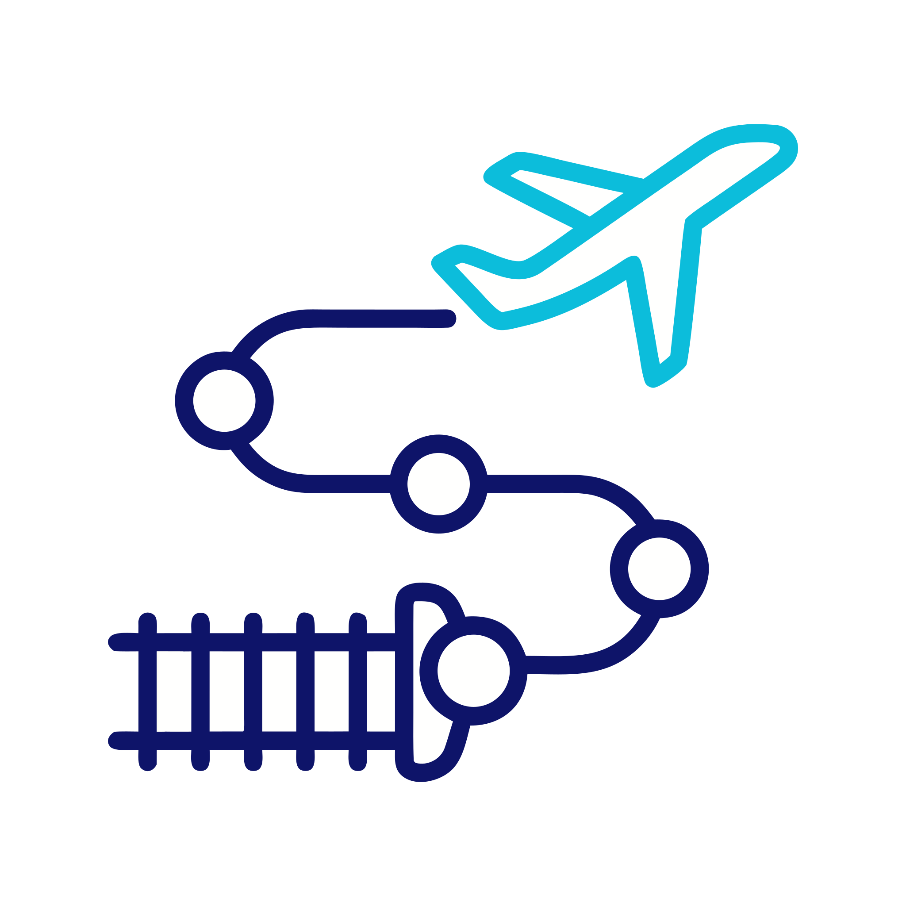
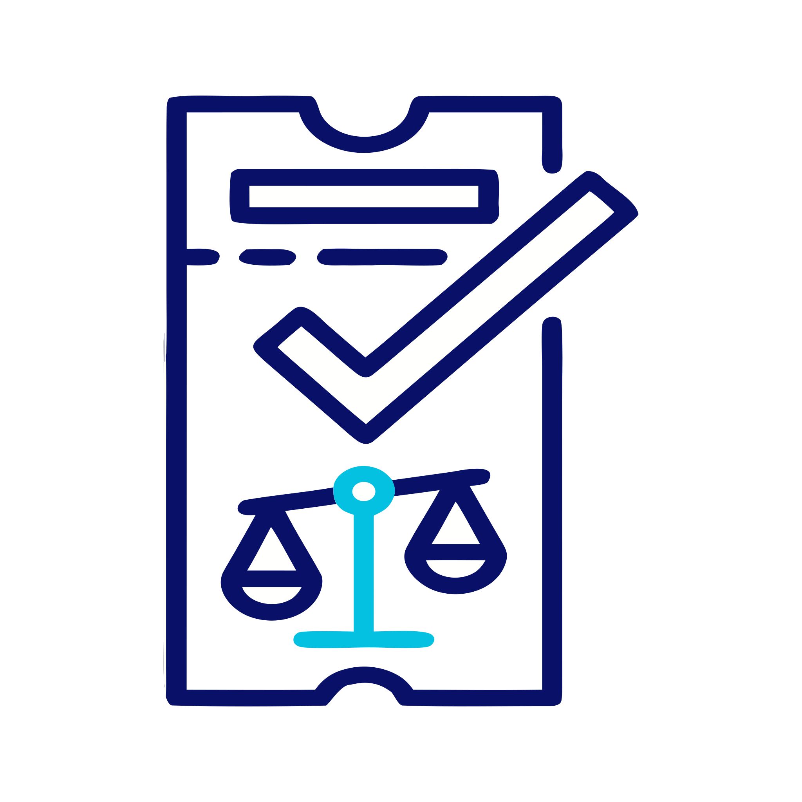

Smart Buffer Engine
Розумний часовий зазор
Наш AI-алгоритм аналізує черги на митниці в реальному часі та автоматично закладає 4–5 годин на перетин кордону, щоб ви спокійно встигли на свій рейс.
Об’єднуємо потяги УЗ, міжнародні автобуси та лоукостери ЄС у єдиний маршрут. Розраховуємо безпечний Smart Buffer (4–5 годин) на перетин митниці та гарантуємо заміну квитка при затримці.
.svg)
Надійна архітектура поїздки
Ми перетворили складний транзит через сусідні країни на простий та прогнозований процес.
Smart Buffer Engine
Наш AI-алгоритм аналізує черги на митниці в реальному часі та автоматично закладає 4–5 годин на перетин кордону, щоб ви спокійно встигли на свій рейс.

Multi-modal booking
Більше не потрібно тримати відкритими 10 сайтів. Бронюйте потяг УЗ, автобус та літак (Ryanair / WizzAir) за один клік із єдиним чеком.

100% Guaranteed transfer
Якщо автобус затримається на кордоні довше прогнозу — ми безкоштовно перебронюємо квиток на наступний рейс або компенсуємо його вартість.
Перевірені маршрути
Готові відстежені стиковки з урахуванням часу на митницю та аеропорт.
Склад: Потяг УЗ + Автобус + Smart Buffer 4.5h + Літак (WizzAir / Ryanair)
Час у дорозі
18 год 30 хв
Шегині–Медика & трансфер у KRK
Склад: Потяг УЗ + Smart Buffer 4.0h + Потяг PKP Intercity
Час у дорозі
14 год 10 хв
Контроль у Перемишлі
Технологія безпеки
Три надійні рівні AI-моніторингу гарантують, що жодна черга на митниці не зірве ваші плани в Європі.
Система перевіряє затримки на пунктах пропуску (Шегині, Краківець, Медика) за останні 24 години на основі телеметрії.
Алгоритм підбирає рейс літака чи потяга в ЄС тільки з урахуванням розрахованого вікна безпеки (4.0 - 5.5 годин).
Якщо щось піде не так, служба підтримки перенаправить вас на альтернативний рейс або поїзд прямо під час поїздки без доплат.
Реальний досвід подорожей
«Найбільше я боялася застрягти на митниці й пропустити літак WizzAir із Варшави. WayUA підібрали потяг із зазором у 4.5 години. На кордоні дійсно була черга, але завдяки буферу я спокійно приїхала в аеропорт за 2 години до вильоту!»
Олена Ковальчук
Київ → Варшава → Париж
«Сервіс — просто знахідка. Отримав один QR-код на весь маршрут. Автобус спізнився на 40 хвилин, але система заздалегідь розрахувала це, і я без жодного нервового зриву встиг на свій пересадний рейс. Рекомендую!»
Маркіян Савченко
Львів → Краків → Відень
Безстресовий транзит до Європи
Заплануйте свій наскрізний маршрут до ЄС просто зараз та отримайте повну гарантію захисту пересадок від WayUA.